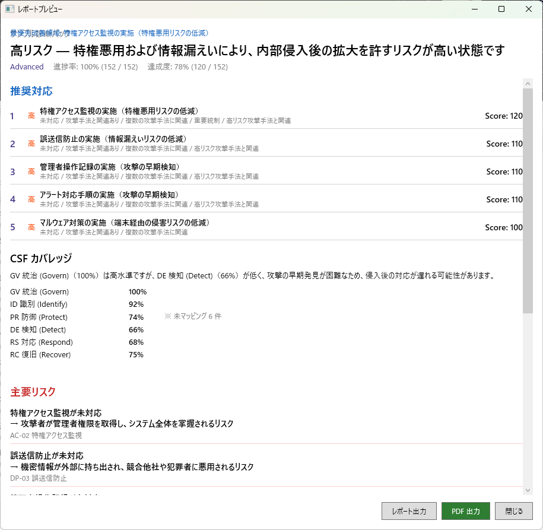
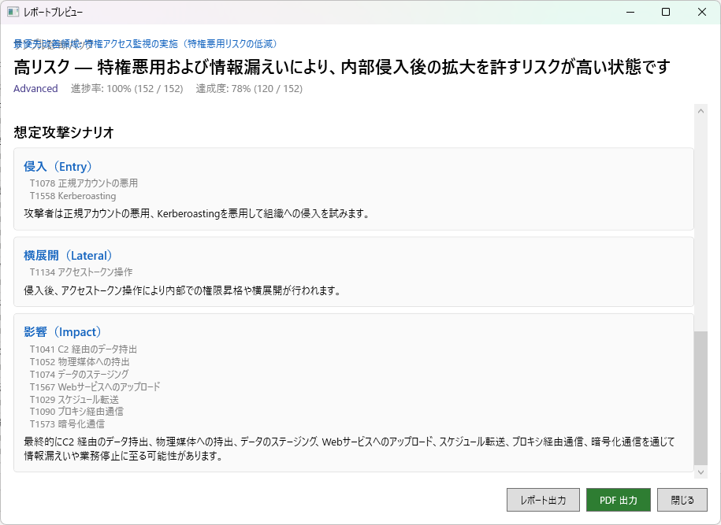
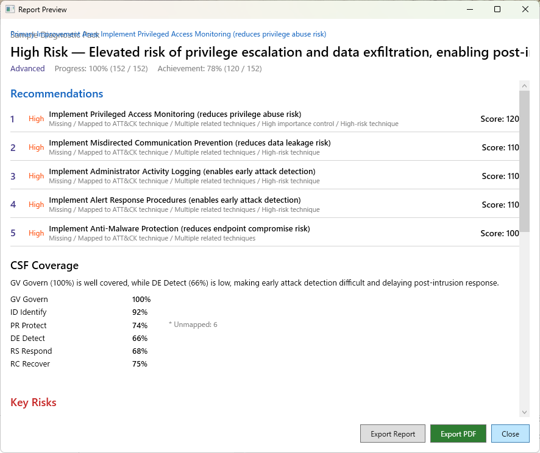
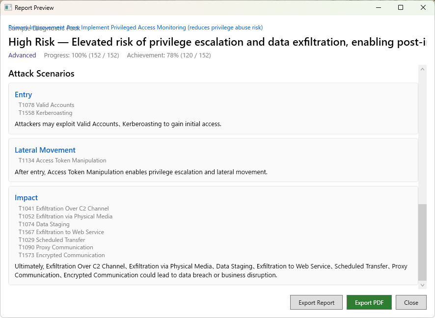

レポートのプレビュー、保存・PDF 出力（Pro）
結果画面の「レポートプレビュー」で、診断結果をレポート形式でプレビューできます。レポートのプレビューと保存・PDF 出力は Pro で利用できます。Free 版では「レポートプレビュー」ボタンは無効です。

Pro 版では、診断結果のレポートをプレビューできます。レポートプレビューには以下の節があります。

Pro 版では、レポートを PDF ファイルとして出力できます。HTML / Markdown での保存も Pro 版で利用できます。
PDF 出力には WebView2 Runtime が必要です。インストールされていない場合は別途インストールしてください。詳しくはトラブルシューティングを参照してください。
Report preview, saving and PDF export (Pro)
The Report Preview screen, opened with "Report preview" on the Results screen, shows the assessment results in a report format. Preview, saving, and PDF export are available in Pro. In the Free edition, the "Report preview" button is disabled.

The Pro edition lets you preview the full report. The report preview includes the following sections:

The Pro edition allows you to export reports as PDF files. Saving as HTML / Markdown is also available in Pro.
PDF export requires the WebView2 Runtime. If it is not installed, install it separately. See Troubleshooting for details.